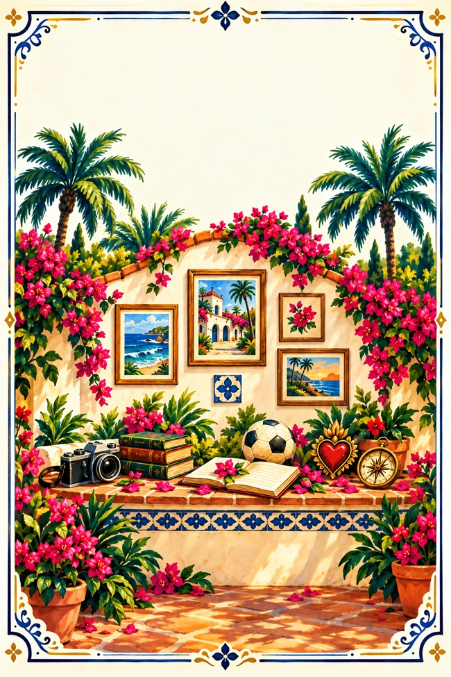
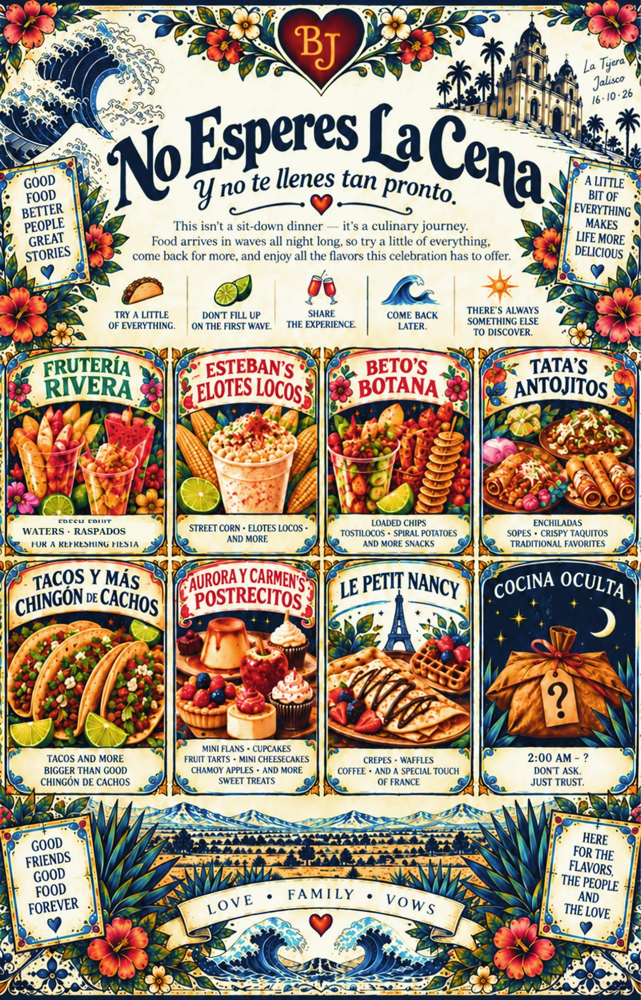
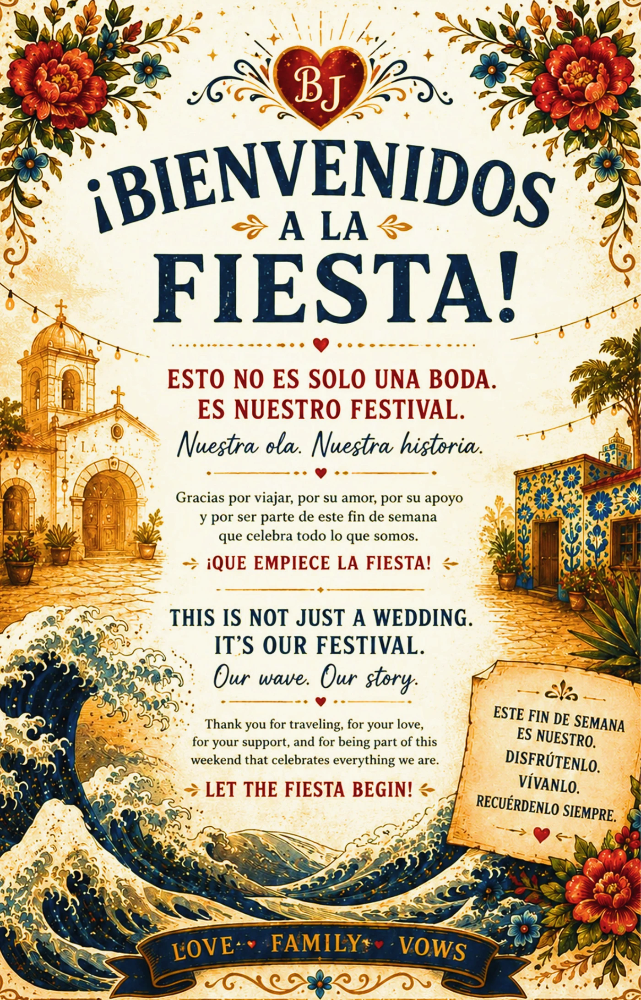
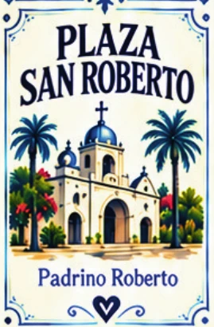
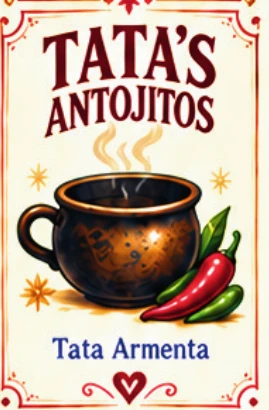

01 / THE GUIDE
01 / THE GUIDEThe world, in your hands.
An illustrated festival guide, built to help guests navigate the world.
01 / THE ARTSee the printed world ↗
 02 / THE PLAZAExplore the neighborhood ↗
02 / THE PLAZAExplore the neighborhood ↗

03 / THE PEOPLEIt took a village ↗ 04 / THE PRODUCTIONSee what we built ↗Some stories are better felt through the images. Others reward the curious. Both paths lead through the same real production.
For the people who want to look first, here are the doors into the world we built. Every picture is drawn from the actual OLA site archives; the words are here when you want them.
01 / THE GUIDEAn illustrated festival guide, built to help guests navigate the world.
02 / THE PLAZAPlaza San Roberto held the names, spaces, and memories that shaped the night.
 03 / THE SOUNDS
03 / THE SOUNDSFrom Sunset Selectors to Neon Mirage, music gave the night its chapters.
Memorials, names, and keepsakes were part of the experience, not just decoration.
Wave 26 preserves songs and albums that extend the story beyond the wedding.

06 / THE EXPERIENCEPrinted pages, guest journeys and little surprises created invitations to explore.

ACT I / THE SPARKA festival feeling: freedom, discovery, belonging. What happens when you bring that magic into the everyday world?

ACT II / THE MAKINGIllustrations, songs, maps, plans, announcements, stories—and a place for every person to find their own way through it.
ACT III / THE NIGHTThe art was the invitation. The guests were the experience. The village couldn't happen on a screen alone.

Original creative archive · illustrationGuadalajara: Plaza San RobertoFriends became collaborators. The nephews stepped up. Harry carried cameras, errands, and moments that might have been missed. Mike helped welcome people and put the bracelets into guests' hands. The decorating team turned blank space into somewhere to belong.
“As much as there were cliques, there weren't. And as much as there weren't, there were. It was beautiful.”
From the couple's post-event reflections. Guest survey and final participation metrics remain in progress.
The event was collaboratively brought to life. These are contributions recalled by the couple, not a complete personnel roster or a ranking of who mattered most.
Co-creator of the La Ola de Amor story and experience. Her full first-person account will be added in her own words.
Photographs, errands, looking for equipment and objects, and practical help throughout the celebration.
Helped with guest wristbands, distribution and sharing the experience with others.
Helped the wedding move forward and responded to issues as they arose. Their fuller roles deserve documenting with them.
The people who installed the papel picado, set up the spaces and helped a planned village become a physical one.
More collaborators and precise credits will be added from the production records and firsthand accounts.
01 / PRINT & ART36 main print-order lines 03 / DIGITAL WORLDBilingual guide
03 / DIGITAL WORLDBilingual guide*Print-order quantities are planned counts and remain subject to final invoice reconciliation. Music track entries are catalog listings, not verified independent audio masters.
We haven't filled the Guadalajara gallery with pretend wedding moments or mislabeled images from another celebration. This space is reserved for actual photographs and their stories: the ceremony, Plaza San Roberto, food, music, the unexpected interactions, and the people who made it possible.
Editorial placeholder only. No event photograph or guest reaction is invented here.
These are different kinds of counts—not one giant total. Switch between layers to see the work, its source, and where verification still matters.
DOCUMENTED ORDER · PLANNEDThe principal print order lists 36 design and print line items. A quantity total of 271 planned units includes 111 sixteen-page festival guides. These are order figures, not confirmed final deliveries.
SOURCE STANDARD: “Documented” means listed in existing records or website code; “recalled” means reported in personal post-event reflections. Neither proves a particular guest saw an asset. Pending evidence stays marked as pending.
*Lifetime account totals include activity beyond this wedding. This figure is not an estimate of wedding-only AI usage.
The original 2.8B snapshot missed a dedicated wedding account. The expanded inventory records three ChatGPT accounts and two unmeasured Gemini workspaces.
Jon / Personal: approximately 1.8B lifetime tokens
Jon / Business: approximately 1.0B
Bri / Business: approximately 251.3M
Combined: approximately 3.0513B.
Jon's Gemini and Bri's Gemini workspaces supported video-generation work. Their usage is not included in the measured lifetime token total.
Source basis: reported account dashboard snapshots documented in Volume 001. Account-level usage is not attributable exclusively to the event.
The original report compares OLA's workflow with categories of everyday, power-user, employee, and enterprise AI use. It also explicitly warns that those public benchmarks use messages or thinking-capability usage, while OLA's figure is lifetime tokens.
This was a documented creative and operational system, not a single burst of chats.
September 19: cross-account handoff
October 1: earlier personal usage reference
October 6: Business account snapshot
October 16: La Ola de Amor wedding
October 23: expanded lifetime account tally
La Ola de Amor Bible; account usage logs; post-wedding handoffs; public, personal, and DJ/VJ delivery spaces; wedding archive spanning Vegas, Paris, and Guadalajara.
Earlier snapshot figures are historical documentation, not an independently audited billing export.
Signage, posters, booklets, maps, papel picado and printed keepsakes.
Teasers, guidebook, intros, writing, messaging and identity.
Bilingual announcements, WhatsApp groups, guest updates, seating and coordination.
Wedding soundtrack, DJ worlds, VJ content, entrances and visual loops.
Schedules, staffing, food, bar, vendor coordination and contingencies.
Website/app, push notifications, Drive systems, documentation and analytics planning.
The report frames OLA as a small independent studio coordinating design, strategy, production, communication, logistics and archival work with AI.
It identifies creative direction, storytelling, experience design, branded activations, community building and digital worlds as potential future lanes—not proven business outcomes.
“The real value is not the token count. It's the ability to turn imagination into coordinated reality.”
La Ola de Amor brought a documented vision into an event guests could actually experience. The remaining task is measuring what happened—and preserving the people who brought it to life.
“La Ola de Amor was not just a wedding. It was a prototype.”